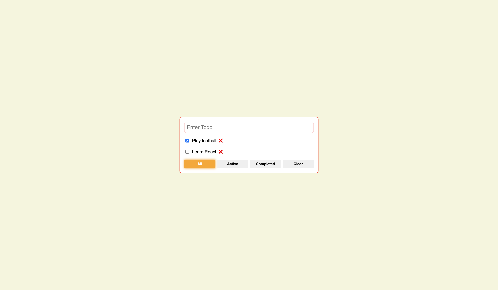
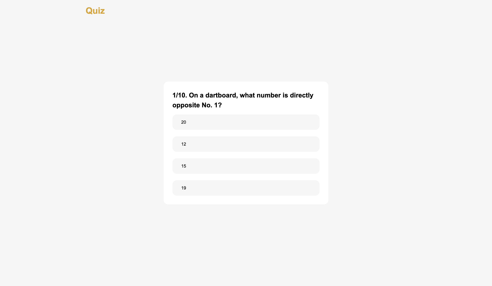
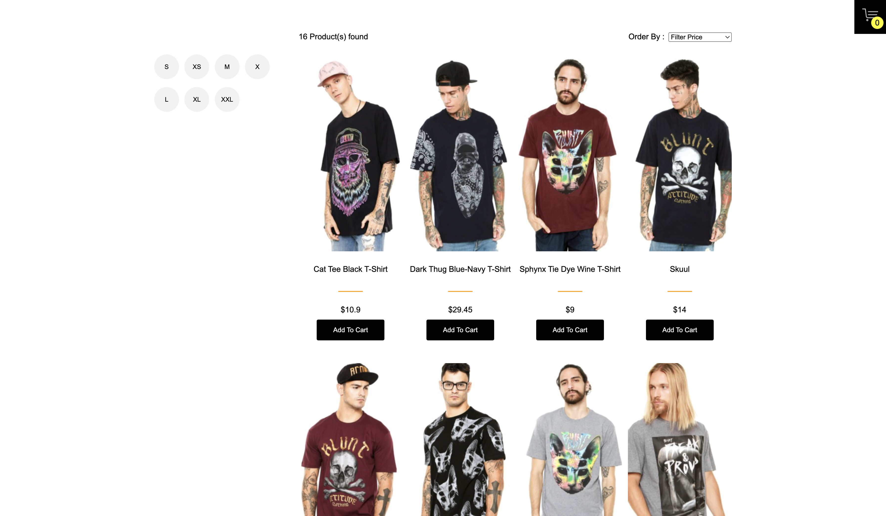
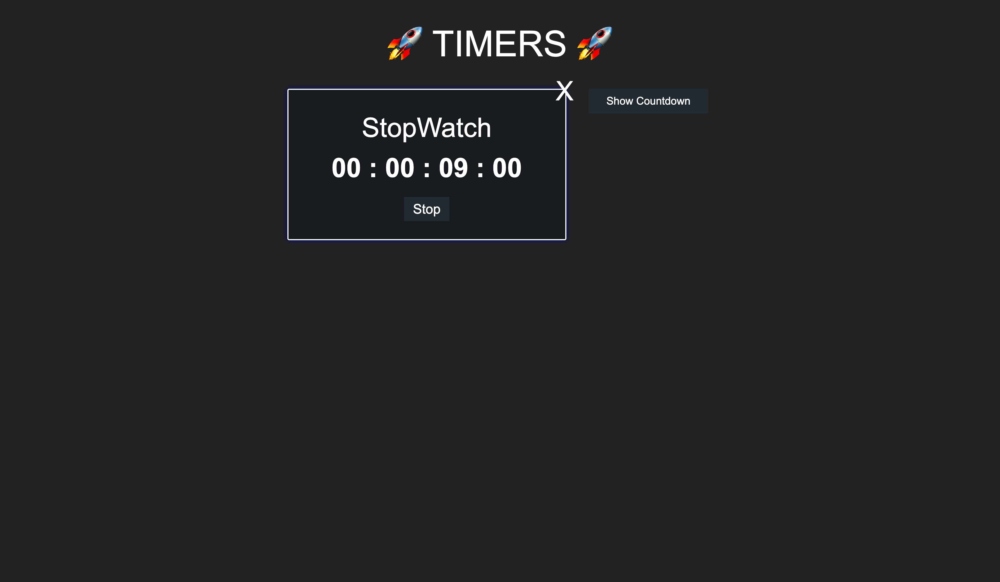
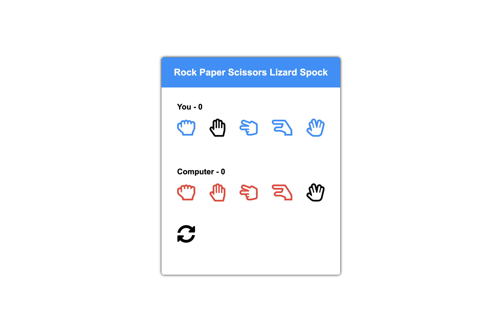

Projects
-

Responsive website template using mobile first approach
This is a fully responsive website template clone that has been created using the mobile first approach using flexbox.
-

React-Redux todo application
This todo application makes use of Redux for state management and gives features to show completed, active and list of all todos, etc.
-

Full Stack blog application using ReactJs and Node.js
This is a full stack project using ReactJs for the frontend with Node.js for backend. The database used for this is MongoDB
-
Blog Api using Express.js
This is the blog api created using the api endpoints of conduit web api. This api has been developed in Express.js and the database used is MongoDB
-

Quiz App with ReactJs
This is a basic quiz application that uses the opentdb quiz api for fetching questions from mulitple categories and difficulty levels.
-

React Shopping Cart Application using Redux and hooks
This Application makes use of redux for state management and also uses function components with hooks.
-

React Stopwatch and Countdown Application
A basic stopdown and countdown application using ReactJS. This app allows you to run a stopwatch or a countdown at a given time.
-

VanillaJs Rock-Paper-Scissors game
An Extended version of the Rock-Paper-Scissors game this game includes Spock and Lizard as well. The user can play the game against the computer.
-

Website template clone
This is a multipage frontend project a template clone created using flexbox.